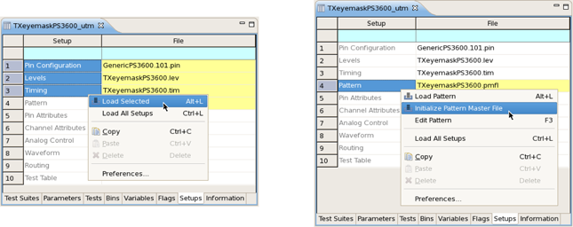
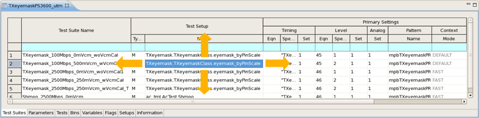
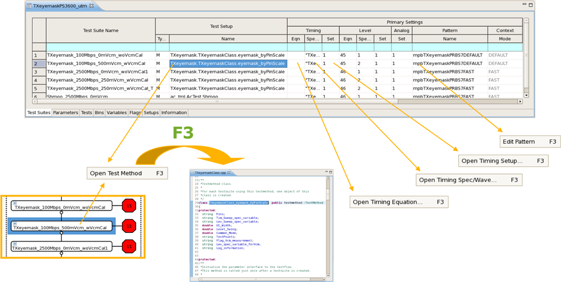
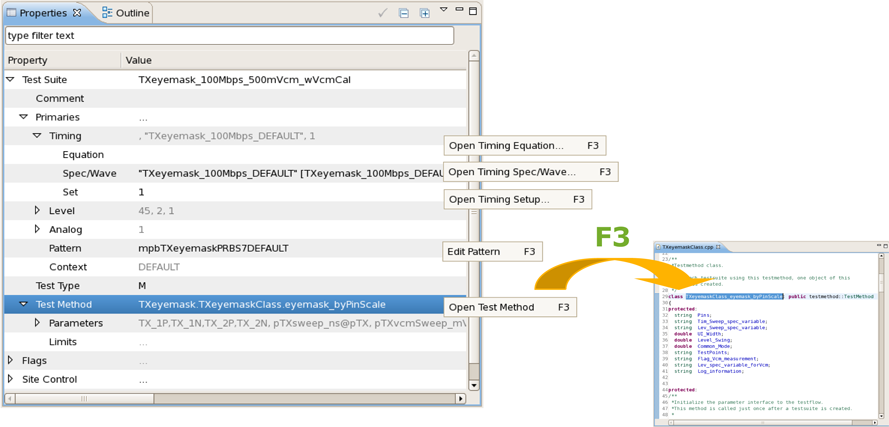
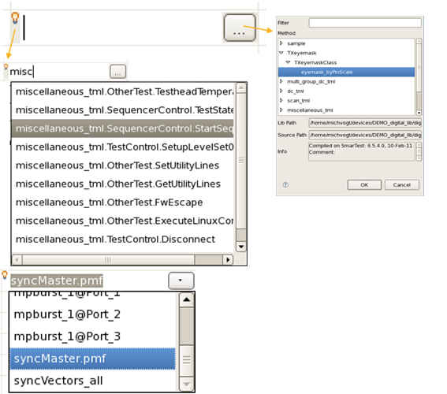
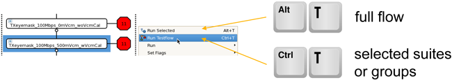
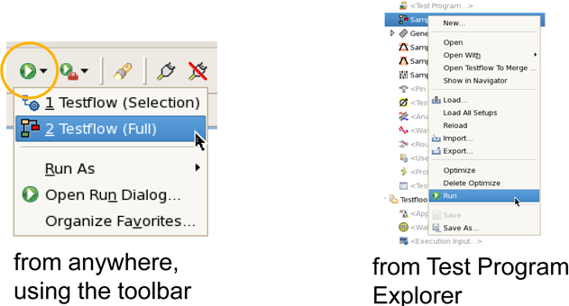
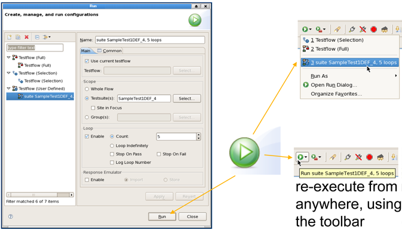
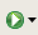

Working with testflows efficiently
This topic gives tips on how to use SmarTest when working with testflows, like loading, editing, and running them or switch easily to set up details for editing tasks.
Loading testflows and device setups
- On the Test Program Explorer right-click <Testflow...> and
choose Load to select the testflow.

- Load the device setup:
- On executing the testflow, SmarTest loads the data automatically
- On the Test Program Explorer right-click the testflow and choose Load all setups
- On the Setups page load dedicated setups and initialize (parse) The pattern master file:

When executing single test suites SmarTest dynamically loads the missing labels.
Navigating in testflows and to set up details
On the Test Suites page use the arrow keys to navigate between the cells:

Use the function key F3 to navigate to then next level of setup definition:
- On the Test Suites page

- On the Properties view

Editing details
- To open the cell editor on the Test Suites page (or any other table based editor):
- Select the cell and press the SPACE key
- Double click the cell.
- To leave the cell without changing its content press the Esc key.
After activating a cell:
- The light bulb icon indicates that the content assist is
available.
Press Ctrl+SPACE or start typing the first characters and press Ctrl+SPACE to open the completion list
- Clicking the ... (triple dot) button respectively the
 (triangle) button at the end of the cell opens a select window respectively a
completion list
(triangle) button at the end of the cell opens a select window respectively a
completion list
Running (executing) testflows and run configurations
- Execute a full testflow or selected suites or groups from the Flow Sequence Editor:

- The function Run Configurations (on the menu or use the Run sub-menu on the toolbar) lets you execute a
testflow or selected test suites, even if the testflow editor is not visible.

- Modify existing selections or create new run configurations and
use different ways to (re-)execute them:

- SmarTest memorizes the last executed run configuration.
To run it, what ever view or editor is currently activated:
- Click the Run button:

- Press Ctrl+F11
- Click the Run button:
Functional changes
- Introduced in SmarTest 7.1.3